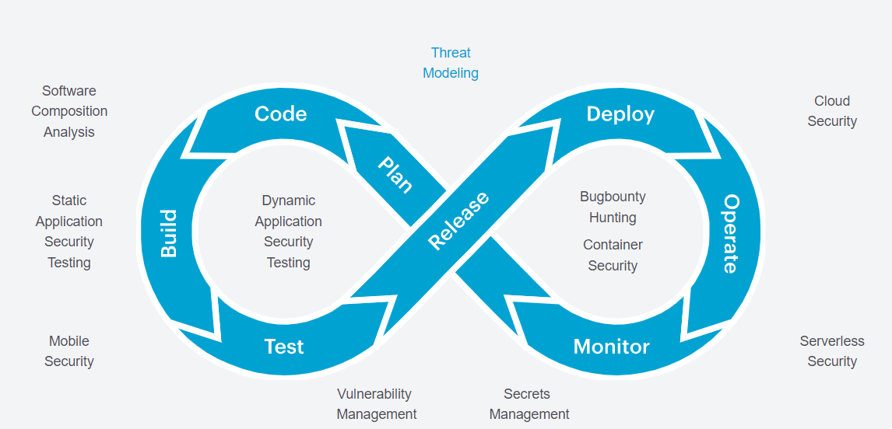
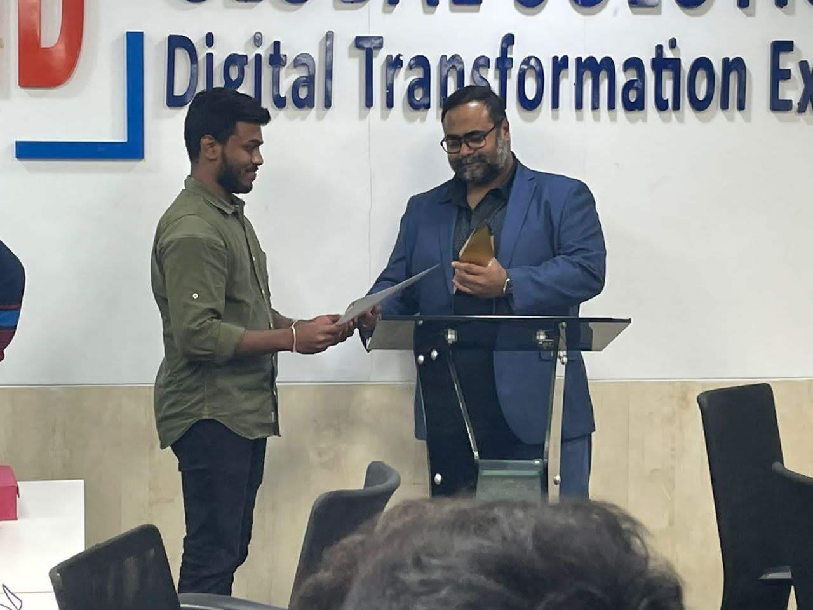

Intro

Welcome to my portfolio! I am a dedicated and results-driven DevSecOps Engineer with a passion for building and securing modern, cloud-native applications. With a robust background in cloud technologies, DevOps practices, and a strong focus on application security and cybersecurity, I strive to create resilient and secure software solutions that meet the highest industry standards. awesome work.
Expertise
My skill set encompasses a wide range of tools and technologies, including but not limited to:
• Continuous Integration/Continuous Deployment (CI/CD): Jenkins, Gitlab CI
• Source Code Managment : GitHub,BitBucket,Gitlab,Google source Repos
• Application Security Testing: SonarQube, Acunetix DAST, Checkmarx SAST,Checkmarx SCA , RASP , IAST ,Threat Modelling
• Containerization and Orchestration: Docker, Kubernetes, Google Kubernetes Engine (GKE), Amazon Elastic Kubernetes Service (EKS)
• Cloud Platforms: Google Cloud Platform (GCP), Azure DevOps , AWS
• API Management: Apigee, Azure Api Managment
• Operating Systems: Linux , Windows
• Artifact Management: Nexus, JFrog, Google Artifact Registry, Maven
• Scripting and Languages: Python, Groovy, Shell Script
• Container Image Security: Kritis Signer, Cosign, Binary Authorization ,Kyverno
• Vulnerability Assessment and Penetration Testing (VAPT): Qualys , Google Container Analaysis , Trivy
• Infrastructure as Code (IaC): Terraform
• Package manager : Helm , Kustomize
• GitOps : Anthos Config Managment , Config sync , Argo CD
about

As a DevSecOps Engineer in my 2 + years of professional carrer , I played a pivotal role in ensuring the seamless integration of security practices into our software development and deployment pipelines. My responsibilities encompassed a wide range of tools and technologies to fortify the software development lifecycle.
Professional Summary:
• A competent team member with around 2 plus years of experience in DevOps and DevSecOps
• Expert in Setting Up DevSecOps pipelines for container-based application using Jenkins and Gitlab CI from Scratch
• Experience in branching, merging, tagging, and maintaining the version across environments using SCM tools like Git
• Expert in Setting Up Pipelines for Apigee Deployments from Scratch
• Good experience in Build tools such as Maven
• Experience in Working with artifact registry tools like for nexus, google artifact registry, Jfrog
• Hands-on experience in containerizing applications and skilled with building automated solutions
• Possess sound knowledge in Container scanning tools and Container Signing tools
• Supported development and DevOps team in threat modeling exercises to identify and address potential security threats and vulnerabilities at the design phase
• Implemented policy-as-code using Kyverno and Binary Authorization to enforce security policies and access controls throughout the Kubernetes cluster
• Developed scripts in Groovy, and Shell to automate various aspects of the CI/CD pipeline and infrastructure provisioning, enhancing efficiency and reliability
• Managed artifact repositories with JFrog, Google Artifact Registry, and Nexus, ensuring the availability and security of dependencies
work
SIDGS
Site Reliability Engineer
Role: Site Reliability Engineer
Project: ICICI Bank
Domain: Banking
Responsibilities :
• Building Docker images and pushing it to Gcp container registry
• Deploying Microservices in Dev/Uat clusters
• Managed Production level Anthos Cluster
• Worked On Apigee Proxy/Shared flows/org & env level entities deployment
• Production support tasks as 24/7
• Incident response management, troubleshooting issues, log analysis, performance concerns
• Attends necessary meetings with the client to maintain relationships needed to maintain system reliability
• Updating runbooks for Future references
• Trained and guided new joiners into the team
Back to SIDGS Projects
DevSecOps Lead
Role: DevSecOps Lead
Project: HDFC Securities Limited
Domain: Banking
Tools: Google cloud platform, container registry, cloud storage bucket, cloud kms keys, google Kubernetes
engine, Jenkins ,GitLab , kaniko ,Kritis signer , Apigee , Binary Authorization ,Maven , SonarQube ,Docker ,
Kubernetes , GCP Container Analysis
Responsibilities :
• Managing all phases of build and release activities, dependency management and deployment strategy
• Automated Creating Git Repository, Base Branches (develop, master) and Providing Permissions Using Shell script
• Automated Creation of release, hotfix, and feature Branches Using Maven JGitFlow Plugin
• Experience and Good Understanding in Apigee Maven Config Plugin and Apigee Deploy Maven Plugin
• Building artifacts using maven as build tool and deploying it to google artifact registry
• Designed pipelines for deployment of apigee entities using Jenkins as ci tool and using Apigee Maven Config Plugin and Apigee Deploy Maven Plugin
• Designed CICD pipelines from scratch using groovy/shell script in Jenkins
• Installing Jenkins and Configuring Jenkins in Google Kubernetes Engine
• Configured Kubernetes pods as a Jenkins build agent
• Responsible for application Build & Release process which includes Code Compilation, Packaging Security Scanning, and code quality scanning
• Configure Jenkins jobs and pipelines using Git, Maven, MS- Build, Jenkins, SonarQube, google
cloud antifactory, which includes build and deployment of Java applications to gke cluster
• Worked with google container registry, artifact registry, cloud kms keys , Cloud storage bucket , IAM
• Scanned docker image vulnerabilities through GCP container analysis
• Signed docker images by validating the vulnerability level using Kritis signer
• Validated docker images to be deployed in gke cluster using binary authorization
• Worked with Anthos Config Management as GitOps tool
• Designed Release Process for promoting it to higher environments
• Added checkpoints in the pipeline for docker images validation for promotion to higher environments
• Responsible for removing/updating vulnerabilities in Docker images
• Responsible for creating users and providing permissions to repos in GitLab
• Designed Shared library for all the pipelines
• Configured Kubernetes pods as a Jenkins build agent
Back to SIDGS Projects
DevSecOps Engineer
Role: DevSecOps Engineer
Project: BDO Unibank
Domain: Banking
Tools: Jenkins, google artifact registry, google Kubernetes engine, google container registry, Gitlab Ci,
kaniko, cosign, kyverno, Apigee, GitLab artifact registry, GitLab container registry, Maven, SonarQube,
Docker, Kubernetes, Qualys
Responsibilities:
• Managing all phases of build and release activities, dependency management and deployment strategy
• Automated Creating Git Repository, Base Branches (develop, master) and Providing Permissions Using Shell script
• Automated Creation of release, hotfix, and feature Branches Using Maven Jgitflow Plugin
• Experience and Good Understanding in Apigee Maven Config Plugin and Apigee Deploy Maven Plugin
• Building artifacts using maven as build tool and deploying it to google artifact registry
• Designed pipelines for deployment of apigee entities using Jenkins as ci tool and using Apigee Maven Config Plugin and Apigee Deploy Maven Plugin
• Designed pipelines from scratch using GitLab ci for devsecops
• Installing Jenkins and Configuring Jenkins in Google Kubernetes Engine
• Responsible for application Build & Release process which includes Code Compilation, Packaging Security Scanning, and code quality scanning
• Configure GitLab ci pipelines using Gitlab, Maven, MS-Build, SonarQube, GitLab artifact registry, which includes build and deployment of Java applications to aws eks cluster
• Scanned docker image vulnerabilities through Qualys
• Signed docker images by validating the vulnerability level using cosign
• Validated docker images to be deployed in gke cluster using kyverno
• Worked with Config sync as GitOps tool
• Designed Release Process for promoting it to higher environments
• Added checkpoints in the pipeline for docker images validation for promotion to higher
environments
• Responsible for removing/updating vulnerabilities in Docker images
• Responsible for creating users and providing permissions to repos in GitLab
Back to SIDGS Projects
Alshaya
Senior-DevSecOps Engineer
Role: Senior DevSecOps Engineer
Project: Alshaya
Domain: Retail
Tools: Azure DevOps, Azure artifact registry, Azure Kubernetes engine, Azure container registry,
kaniko, Maven, SAST,DAST,IAST,RASP,SCA,Trivy,GitOps-Config sync,kustomize,helm,shell scripting, Docker, Kubernetes, Qualys
Responsibilities:
• Audited and reviewed DevOps processes across the organization
• Designed comprehensive threat modeling processes
• Integrated application Security tools into the DevOps pipeline
• Collaborated with VAPT and GRC teams to enhance the DevOps lifecycle
• Recommended industry best practices in the DevOps lifecycle
• Designed standardized DevSecOps processes across the organization
Back to Alshaya Projects